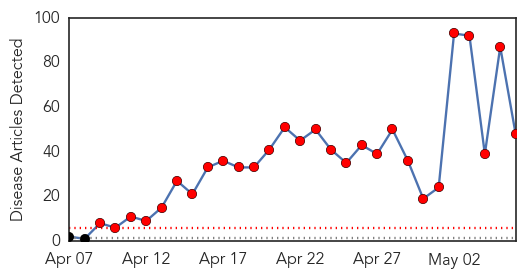
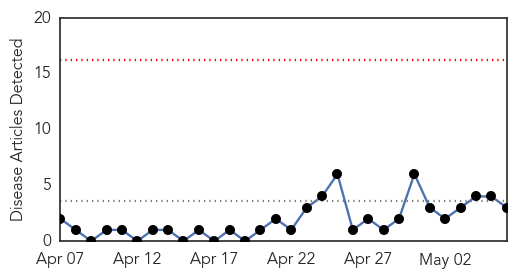
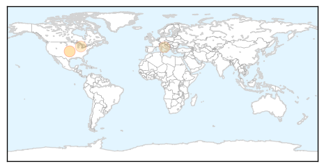

MERS
30-Day Web Trend
28 alerts, 0 warnings

30-Day Twitter Trend
8 alerts, 0 warnings

Article Locations

Article Confidences
Top Articles:
- 1.000
- 1st U.S. MERS Patient Could Leave Hospital Soon — Naharnet
- 1.000
- First US MERS patient could leave hospital soon
- 1.000
- 5 Things You Need To Know About MERS
- 1.000
- First MERS Virus Case in U.S. Concerns Infectious Disease Experts
- 1.000
- What Is MERS?
- 1.000
- CDC confirms case of MERS virus
- 0.999
- First U.S. MERS patient improving, gets ready for discharge
- 0.999
- Deadly MERS virus migrates to the US but no need to get alarmed, says CDC
- 0.999
- MERS Surge: Many Questions, Few Answers
- 0.999
- Exclusive: Specter of SARS weighs on CDC as MERS virus lands in U.S
- 0.999
- First American Mers patient may leave hospital soon
- 0.998
- MERS: CDC confirms first U.S. case of Middle East respiratory syndrome
- 0.998
- Indiana MERS patient improving, hospital workers isolated
- 0.998
- MERS Indiana Patient Update
- 0.998
- Patient dies of suspected MERS infection in Medan
- 0.998
- Bahrain on alert to fend off MERS virus amid regional concerns
- 0.998
- Lessons learned: How SARS could prevent a MERS virus outbreak
- 0.998
- MERS Can Be Transmitted From Camel to Human, Study Confirms
- 0.997
- Saudi Arabia: MERS Cases Reach More Than 400
- 0.997
- Saudi Arabia: MERS cases reach more than 400, more than 100 dead
- 0.997
- MERS Can Be Transmitted From Camel to Human, Study Confirms
- 0.996
- Saudi replaces head of Jeddah hospital as it fights MERS rise
- 0.996
- MERS death toll reaches 115 in Saudi Arabia
- 0.996
- MERS death toll hits 115 in Saudi Arabia
- 0.995
- Fiji Times Online
- 0.995
- Jordan confirms new case of MERS virus infection - Xinhua
- 0.994
- Indiana MERS patient in ‘good condition’, hospital working on discharge plans
- 0.993
- Jordanian dies of MERS virus
- 0.991
- Another MERS case emerges in Medan
- 0.991
- First U.S. MERS patient to be isolated at home after discharge
- 0.990
- Coronavirus Infected Patients in Saudi Arabia increased 86% in April
- 0.990
- Saudi Arabia: 414 MERS cases, more than 100 dead
- 0.988
- MERS Watch: Investigate Virus, Dems Urge
- 0.986
- U.S. Case of Deadly MERS Sparks Call for Hearings
- 0.986
- PHL is MERS-CoV-free as all Etihad 0424 passengers now cleared DOH
- 0.981
- Pilgrims to Saudi alerted over MERS
- 0.978
- Another suspected case of MERS reported in Medan
- 0.971
- UAE scientists investigate Mers link between camels and rodents
- 0.968
- Editorial: Travel ban to Saudi Arabia
- 0.963
- 2nd suspected coronavirus death in Egypt
- 0.939
- Top Stories
- 0.917
- Filipina nurse hospitalized for MERS in Saudi
- 0.906
- Suspected MERS Death Reported in Medan
- 0.869
- UI Middle East Respiratory Syndrome expert available to comment
- 0.837
- Indonesia to tighten borders amid coronavirus scare
- 0.774
- University of Iowa Virologist Developed First MERS Mouse Model. Says SARS Experience Has Helped with Rapid MERS Response
- 0.739
- الاخبار المصورة
- 0.553
- Contact tracing scheme for HIV/AIDS proposed
Top Tweets:
- 0.671
- RT: MERS US patient continues to improve. All close contacts who have been tested are negative for MERS-CoV.
Meningitis
30-Day Web Trend
0 alerts, 0 warnings

30-Day Twitter Trend
0 alerts, 0 warnings

Article Locations
Article Confidences
Top Articles:
Top Tweets:
-
No tweets found for May 06, 2014